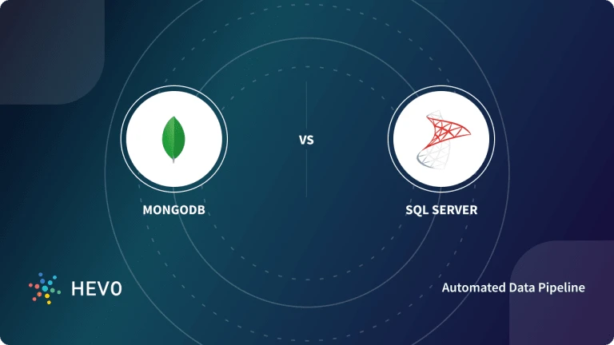

Nidhi B. on Database Management Systems, Microsoft SQL Server, MongoDB • February 10th, 2022 WRITE FOR HEVO
While building a software application, the question arises where will you store your data and how? The traditional approach is a simple text file or CSV file which is not a good choice in today’s big data world. The solution is Database Management System(DBMS) which allows different user application programs to concurrently access the same Database.
A Database Management system(DBMS) is a simpler, easier, reliable, faster, secure, and powerful software tool for Storing, Managing, and Retrieving data. There are two types of Databases: Relational and Non-Relational Databases. An example of a Relational Database is SQL Server and a Non-Relational Database is MongoDB. We will be discussing the key differences between MongoDB vs SQL Server in this blog.
MongoDB is an open-source, cross-platform, document-oriented, and non-relational database system. MongoDB is developed by MongoDB Inc. and was first released on February 11, 2009. Its stable release is MongoDB 5.0.5 released on 6 December 2021. It is written in different programming languages like JavaScript, Python, Java, PHP, C++, C, Ruby, Perl.
MongoDB is a NoSQL Server in which data is stored in BSON (Binary JSON) documents and each document is essentially built on a key-value pair structure. As MongoDB easily stores schemaless data, make it appropriate for capturing data whose structure is not known. This document-oriented approach is designed to offer a richer experience with modern programming techniques.
To install MongoDB click here.
Main features of MongoDB which make it unique are:
Data operations on MongoDB are fast and easy because of their NoSQL nature. Data can be quickly stored, manipulated, and retrieved without any compromise on data integrity.
In the Big Data era, MongoDB data can be distributed across a cluster of machines quickly and equally, free of bulkiness. The scalability of MongoDB handles a growing amount of data capably. Sharding is a process in MongoDB used to horizontally scale the data across multiple servers when the size of data increases.
Data is highly available with MongoDB as it makes multiple copies of the same data and sends copies of data across different servers. In case any server fails, data can be retrieved from another server without delay.
MongoDB can easily be combined with different Database Management Systems, both SQL and NoSQL types. Document-oriented structure makes MongoDB schema dynamically flexible and different types of data can be easily stored and manipulated.
SQL Server is a Relational Database Management System(RDBMS). It is also known as Microsoft SQL Server or sometimes as MSSQL. SQL Server is developed by Microsoft and was initially releases on April 24, 1989. Its stable release is SQL Server 2019 released on 4 November 2019. MSSQL is written in programming languages like C and C++.
SQL Server is based on the relational model introduced by E. F. Codd. In RDBMS data is stored in tables and the relationships among the data are maintained between tables. In tables, data is organized in rows and columns format. Each column represents a particular field or feature and each row in the table represents an entry or a record.
Microsoft SQL Server offers a variety of editions with different functionally: Express, Enterprise, Standard, Web, Developer. Express edition is freeware for small and entry-level applications while others are licensed-based editions used for bigger projects on commercial levels based on the service required. SQL Server supports XML data type format and dynamic management views.
To install SQL Server click here.
Main features of SQL Server that make it highly usable are:
Microsoft SQL Server offers editions that can be integrated with Microsoft cloud or Azure SQL with built-in security and manageability. Cloud database support makes SQL Server highly available, fast failover with minimum uptime.
Microsoft SQL Servers can easily be used with Windows and Linux systems. SQL Server deployment and its management is easy with Kubernetes.
Data in SQL Server is encrypted and highly secured. Schemas and Tables can be password protected easily and can be accessed with permissions only.
SQL Server mainly focuses on commercial needs so it provides end-to-end business data solutions. Microsoft SQL Server offers tools for Data Administration, ETL solutions, Online Analytical Processing(OLAP), and Data Mining purposes. It additionally provides Option Reporting, Interactive Analysis, and Visual Data Exploration using SQL Server BI tools.
Simplify ETL Using Hevo’s No-code Data PipelineHevo Data is a No-code Data Pipeline that offers a fully managed solution to set up Data Integration for 100+ Data Sources (Including 40+ Free sources) and will let you directly load data from many sources to the Destinations of your choice like MongoDB and SQL Server. Hevo will automate your data flow in minutes without writing any line of code. Its fault-tolerant architecture makes sure that your data is secure and consistent. Hevo provides you with a truly efficient and fully automated solution to manage data in real-time and always have analysis-ready data. Look at some of the salient features of Hevo:
|
The key differences between MongoDB and SQL Server:
| Base of Comparison | MongoDB | SQL Server |
|---|---|---|
| Developed by and Initial Release | Developed by MongoDB Inc. and initially released on February 11, 2009. | Developed by Microsoft Corporation and released initially on April 24, 1989. |
| Database Model | Non-Relational Database: Document-oriented (key-value structure) | Relational Database: Tables format |
| Implementation Language | JavaScript, Python, Java, PHP, C++, C, Ruby, Perl | C, C++ |
| License | Open-Source | License required |
| Data Schema | Dynamic Schema | Fixed Schema |
| Query Language | MongoDB Query Language | SQL Query Language |
| Scalability | Horizontal | Vertical |
| Map Reduce | Supports Map Reduce method. | Does not support the Map-Reduce method. |
| Joins | No | Yes |
| Transaction | MongoDB provides Multi-document ACID transactions with snapshot isolation. | MS SQL Server provides ACID transactions without snapshot isolation. |
| XML support | No | Yes |
The following section talks about the primary differences between MongoDB vs SQL Server in detail:
MongoDB is developed by MongoDB Inc. and was initially released on February 11, 2009.
SQL Server is developed by Microsoft Corporation and was initially released on April 24, 1989.
MongoDB is a Non-Relational Database based on a document-oriented structure that internally is based on a key-value structure.
SQL Server is a Relational Database based on relatable structured tables with various rows and columns.
MongoDB is implemented in JavaScript, Python, Java, PHP, C++, C, Ruby, Perl, C, C++ whereas SQL Server is implemented in C and C++.
MongoDB is an Open-Source DBMS whereas a SQL Server license is required for commercial purposes.
MongoDB has a flexible dynamic schema that can easily be changed with the evolution of data, application, or business.
SQL Server has a fixed Schema that is predefined before inserting any data. Fixed schema means schema can’t be changed as data, application, or business requirement evolves.
MongoDB uses MongoDB Query Language to query unstructured data from the database.
SQL Server uses SQL Query Language to Create Tables, Insert, Fetch or Update data in the database.
MongoDB supports Horizontal Scaling in which data is distributed across clusters. The Sharding process is used to implement horizontal scaling which results in an always-up server.
SQL Server supports vertical scaling which is the traditional approach. In vertical scaling, physical or virtual resources are added to the hosting server of the database.
MongoDB supports a data processing algorithm for concentrating large volumes of data into aggregated results. MongoDB provides the MapReduce database command to perform map-reduce operations.
SQL Server does not support the Map-Reduce method.
MongoDB is a non-relational database so it does not support JOINs whereas SQL Server used JOINS to retrieve data from multiple tables which are joined.
MongoDB provides multi-document ACID transactions (ACID is an acronym for Atomicity, Consistency, Isolation, Durability) with snapshot isolation, which ensures that the database is in a valid state after a set of database operations is executed.
MS SQL Server also provides ACID transactions with data integrity without snapshot isolation.
MongoDB doesn’t support XML structured documents. Documents in MongoDB are stored in BSON format.
SQL Server provides support for XML structured data. XML support is integrated into all the components of SQL Server.
MongoDB is a database that is more advanced and capable of handling big data with dynamic schema features. SQL Server is an RDBMS that is used to manage the relational database system and offers end-to-end business data solutions. In the case of unstructured data MongoDB is a good choice. Also, MongoDB is open source which makes it readily available.
No doubt SQL Server is going strong for many years but now with the era of Big Data, MongoDB seems to have a bright future. But, that doesn’t mean SQL Server will be completely eradicated. The choice of database between MongoDB and SQL Server is completely specific to the user’s needs.
Hevo Data, a No-code Data Pipeline provides you with a consistent and reliable solution to manage data transfer between a variety of sources to destinations like MongoDB and SQL Server, with a few clicks.
Hevo Data with its strong integration with 100+ Data Sources (Including 40+ Free sources) allows you to not only export data from your desired data sources & load it to the destination of your choice, but also transform & enrich your data to make it analysis-ready so that you can focus on your key business needs and perform insightful analysis using BI tools.
Want to take Hevo for a spin? for a 14-day free trial and experience the feature-rich Hevo suite first hand. You can also have a look at the unbeatable pricing that will help you choose the right plan for your business needs.